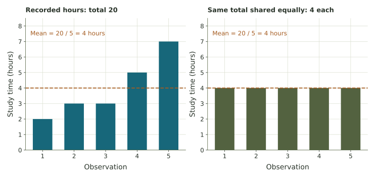
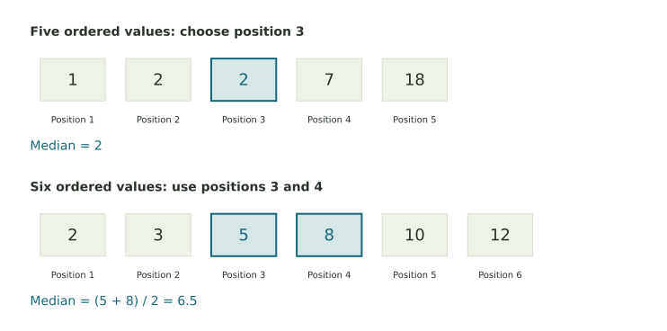
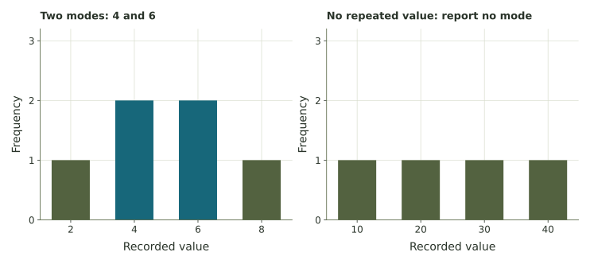
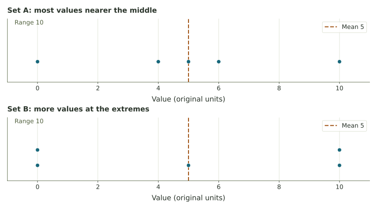
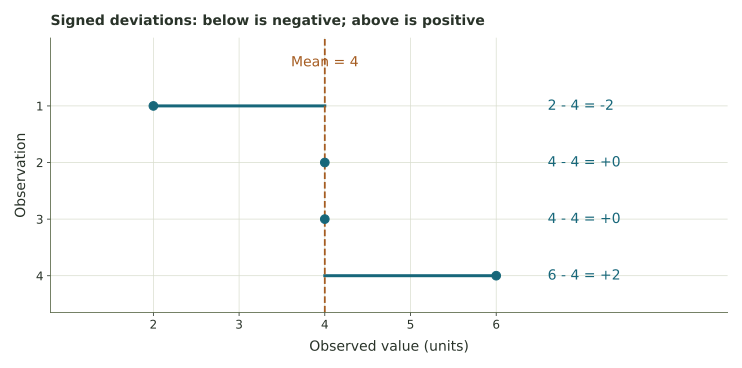
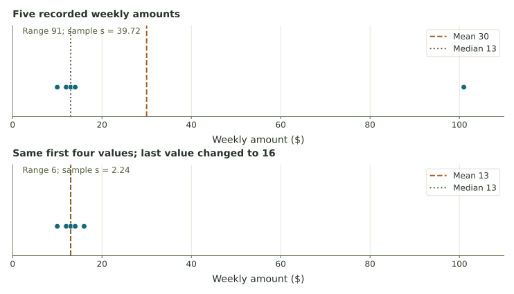
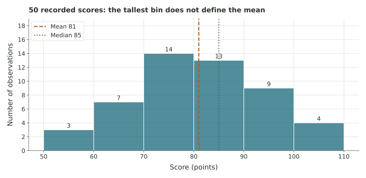
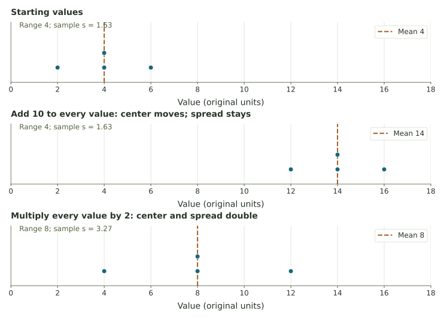

Describing center and variation
Use a graph and a few carefully chosen numbers to describe where observations sit, how much they vary, and what those summaries mean.
When averages conceal variation
Two routes can have the same average travel time while one is much less predictable. Two machines can average the right fill amount while one varies widely from bottle to bottle. We need to describe both the center and the spread.
In Week 2, we counted observations and displayed their frequencies. Here we summarize numerical measurements with their center and spread. The mean, median, mode, range, and standard deviation each describe a different feature of a data set.
What are the numbers about?
A list of measurements is a data set. Each number describes an observation: perhaps one day’s waiting time or the amount in one bottle. Before calculating, ask what was measured, which units were used, and who or what the list describes.
A measure of center describes the typical location of the observations. A measure of spread describes how far apart they are. For a useful comparison, report both and consider the shape of the data.
The same average can describe different experiences
One route to work takes 24, 25, and 26 minutes. Another takes 15, 25, and 35 minutes. Both average 25 minutes. The second route’s average does not tell you that some trips take much longer. If arriving on time matters, you will want to know about that variation.
Units matter. Before averaging travel times, for example, convert all measurements to minutes or all to hours. Comparisons between different groups also require knowing how the observations were selected.
What is missing from “The average was 25”?
Compare your reasoning
We need to know what was measured, its units, which observations were included, and how much they varied. An average is a summary of a specified set of measurements.
The mean: share the total equally
Add the values and divide by how many there are. This gives the mean, often called the average. Imagine sharing the total equally among all the observations.
We write the sample mean as \(\bar x\), pronounced 'x-bar'. The symbol \(n\) is the number of observations, and \(x_1,x_2,\ldots,x_n\) label their values. The mean equals their sum divided by \(n\).

A mean does not have to appear in the list
For 2, 3, 3, 5, and 7 hours, the total is 20 and the mean is 20 ÷ 5 = 4 hours. Nobody reported exactly 4 hours. The mean describes the whole list; it is not necessarily one person’s result.
You can reverse the calculation. If four values have mean 12, their total must be 4 × 12 = 48. If three are 9, 11, and 13, the missing value is 48 − 33 = 15.
The values are 4, 6, and 8 minutes. Find the mean, then recover their total from the mean.
Compare your reasoning
The mean is (4 + 6 + 8)/3 = 6 minutes. Three observations × 6 minutes = 18 minutes, the original total.
The median: find the middle after ordering
Put the observations in order before finding the median. With an odd number of values, choose the middle position. With an even number, average the two middle values.

Sort first
The values 9, 2, 4, 4, 7, and 5 become 2, 4, 4, 5, 7, 9. There are six observations. Positions 3 and 4 contain 4 and 5, so the median is (4 + 5)/2 = 4.5.
Repeated values matter. In 1, 2, 2, 2, 9, the median is 2. There are not equal numbers strictly below and above it because several observations equal it. The ordered-position procedure still works.
The median depends on position in the sorted list. Changing a value far above the middle may change the mean substantially while leaving the median unchanged. This can make the median useful for data with unusually large or small values.
Find the median of 3, 8, 1, and 6.
Compare your reasoning
Sort to get 1, 3, 6, 8. The median is (3 + 6)/2 = 4.5. Averaging the endpoints would give the same answer here by coincidence; the procedure uses the two middle positions.
The mode: count repeated values
The mode is a most frequently occurring value. A frequency table makes the count visible. There can be several tied modes.

Mean, median, and mode answer different questions. The mean shares the total; the median finds the middle; the mode finds a most common value. They can agree, but they do not have to.
Use the question to choose the summary
A shop planning its most commonly requested size might care about the mode. To divide a total cost equally, the mean answers the question. To describe a middle amount when a few amounts are unusually large, the median may be more helpful.
What are the modes of 1, 1, 2, 3, and 3?
Compare your reasoning
Both 1 and 3 occur twice, more often than 2. The modes are 1 and 3; averaging those two modes would answer a different question.
The range: measure the full width
The range is the maximum minus the minimum. It has the same units as the observations.
Watch the subtraction sign
For −3, 1, and 4 degrees, the range is 4 − (−3) = 7 degrees. For 8, 9, 10, 11, 12, the range is 12 − 8 = 4. For 2, 6, 10, 14, 18, it is 18 − 2 = 16. Those last two lists both have mean 10.
The range uses only the two extreme observations. It does not tell you where the remaining values lie. Two lists can therefore have the same mean and the same range while distributing their observations differently.

A data set has minimum 7 and range 18. What is its maximum?
Compare your reasoning
Maximum − 7 = 18, so maximum = 25. Range describes a difference, not the largest value by itself.
Distances from the mean
A deviation is an observation minus the mean. A value below the mean has a negative deviation; one above it has a positive deviation.

For 2, 4, 4, 6, the deviations add to −2 + 0 + 0 + 2 = 0. The zero does not mean there is no variation. It means the mean is a balance point: the signed departures below and above it cancel.
Simply averaging those signed deviations would always give zero, apart from rounding. To describe spread, we need a calculation in which departures cannot cancel each other.
For 1, 3, and 5, find the mean and the three deviations.
Compare your reasoning
The mean is 3. The deviations are −2, 0, and +2, which sum to zero. The observations are still different.
Sample standard deviation, one step at a time
The sample standard deviation, written s, describes spread around the mean using every observation. It is useful to think of it as a scale for distances from the mean. It is not calculated by averaging the ordinary distances.
Square each deviation so opposite signs cannot cancel. Add those squares. For a sample, divide by n − 1 to obtain the sample variance. Finally, take the square root to return to the original units.
The compact symbol \(\sum\) sometimes replaces the long addition. It means “add these terms.” Work down the columns of a table before trying to do the whole formula at once.
| Value x | Deviation x − 4 | Squared deviation |
|---|---|---|
| 2 | −2 | 4 |
| 4 | 0 | 0 |
| 4 | 0 | 0 |
| 6 | 2 | 4 |
| Total | 0 | 8 |
Complete the last two steps
There are four observations, so n − 1 = 3. The sample variance is 8/3 ≈ 2.67 squared units. The sample standard deviation is \(\sqrt{8/3}\approx1.63\) original units. Keep the fraction until the last step; rounding the variance too early can change the answer.

Why n − 1? We have already used the sample to find its mean. Once that mean and all but one deviation are known, the last deviation is fixed by their sum being zero. The sample-variance rule allows for that lost freedom. Its statistical justification concerns estimating variation in a larger population; you do not need that proof to follow the calculation here.
Some calculators offer both a sample SD and a population SD. A population calculation divides by the full count when the list is the entire population being described. These assigned calculations use the sample formula and n − 1. At least two observations are needed. With two or more identical values, s = 0.
For 1, 3, and 5, the squared deviations total 8. Find the sample variance and sample standard deviation.
Compare your reasoning
There are three observations, so divide by 3 − 1 = 2. The variance is 4 squared units, and s = √4 = 2 original units.
Look at the graph as well as the summaries
Compare centers first, then spreads, while keeping the setting and units in view. A larger standard deviation means greater spread around that mean. It does not automatically mean better performance.

Now consider five weekly amounts: 10, 12, 13, 14, and 101 dollars. Their mean is 30 dollars; their median is 13 dollars. The mean correctly shares the full total of 150 dollars. The median better describes the middle of these particular weekly amounts.

A value far from the others is worth investigating. It could be a recording error or a real unusual event. Comparing summaries with and without it shows its influence; it does not by itself justify deleting the observation.
The range is not resistant to extreme values. Using a median alongside a range does not make the range resistant. For this course, calculate the requested measures and explain what each reveals. Other courses may introduce measures such as the interquartile range that focus on the middle part of the data.
Histograms group observations into intervals. A bar’s height counts observations in that interval. The tallest bar identifies a most common interval, not necessarily the location of the mean or median.

If a sample has one very large value, is the range protected from its effect by reporting the median?
Compare your reasoning
No. The median and range are separate calculations. The median can stay nearly fixed while the maximum and therefore the range change greatly.
Weighted averages: unequal shares
In an ordinary mean, each observation receives the same share of the total weight. A weighted average allows different shares. Multiply each value by its weight, then add. For the form used here, the weights are nonnegative and sum to 1.
Two scores with different weights
Scores of 70 and 90 have ordinary mean 80. If the first counts for 25% and the second for 75%, the weighted result is 0.25(70) + 0.75(90) = 17.5 + 67.5 = 85. Convert the percentages to decimal weights before multiplying.
With nonnegative weights summing to 1, the result stays between the smallest and largest values. Larger weight means a value has more influence on the combined result. It does not turn the weight into a statement that the value is correct.
The attention application uses this same operation to combine numerical information. Work the familiar weighted average before reading about its role in a model.
Scores of 60 and 80 receive weights 0.25 and 0.75. Find the weighted average and check its bounds.
Compare your reasoning
The result is 0.25(60) + 0.75(80) = 15 + 60 = 75. It lies between 60 and 80 and is closer to the more heavily weighted value 80.
Moving or rescaling every value
If you add the same number to every observation, all the points move together. Their mean and median move by that number, but the distances between points do not change. Range and standard deviation stay the same.
If you multiply every observation by 2, the distances double too. The mean, median, range, and standard deviation all double. Multiplication by a negative number also reverses order; spread changes by the magnitude of the multiplier and remains nonnegative.

A sample has mean 20 and sample SD 3. Add 5 to every value. What are the new mean and sample SD?
Compare your reasoning
The mean becomes 25; the sample SD stays 3. Each value and the mean moved by the same 5, leaving every deviation unchanged.
Interpreting statistical summaries
Write the result with its units and a sentence about the data. “The five test bottles averaged 250 mL, with sample SD about 0.71 mL” tells us more than two unlabeled calculator outputs.
| Question | Useful calculation | What to keep in view |
|---|---|---|
| What would each share be if the total were equal? | Mean | Every value affects the total |
| What is the middle ordered value? | Median | Sort first; use both middle values when needed |
| Which value repeats most often? | Mode | Ties and no repeated values are possible |
| How far apart are the extremes? | Range | It uses only the endpoints |
| How much do values vary around the mean? | Sample standard deviation | Use all values and the n − 1 rule here |
A summary describes the observations we have. Whether those observations represent a larger group depends on how they were selected and measured. A narrow spread does not establish that the sample came from the right population or that the measuring instrument was accurate.
Week 4 introduces normal models and intervals for population quantities. Here we are learning to describe observed variation. A standard deviation alone does not prove that a data set has a bell shape or tell us a tail percentage.
Two filling machines average the target amount. Does that settle which is more consistent?
Compare your reasoning
No. Compare their observed ranges and sample SDs, inspect the values, and apply the stated tolerance rule. Equal means can conceal very different variation.
References: NIST’s measures of location and measures of scale. Numerical examples in this unit are hypothetical.
Week 3 activities
- Explorer: enter data, compare graphs, and follow the standard-deviation table
- Laboratory: center, range, sample standard deviation, and unusual values
- Application: compare two filling machines
- Attention: a weighted-average application
- Additional attention and spread practice
- Discussion: what an average misses in your own example